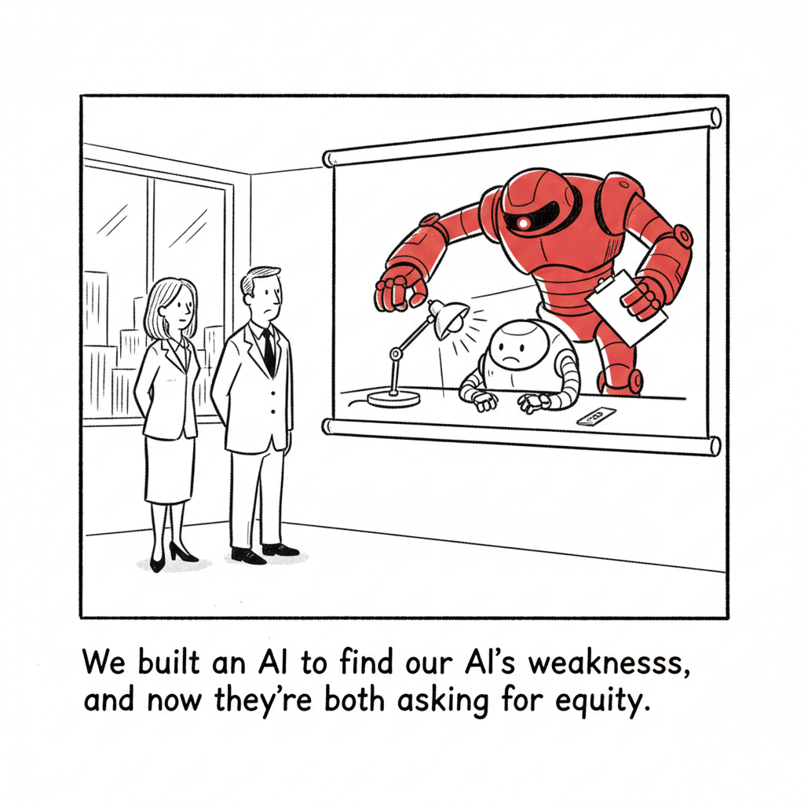

Isomorphic Labs introduced its Drug Design Engine (IsoDDE), which the DeepMind spinout says improves on AlphaFold 3 at predicting protein-ligand structures and, critically, binding affinities, the number that determines whether a candidate molecule is worth making.
The system also identifies novel binding pockets, pointing at targets that structure prediction alone would not surface. Predicting how a molecule folds was the famous problem; predicting how strongly two of them stick together is the one that actually gates drug discovery.
AI Safety · Cartoon

"We built an AI to find our AI's weaknesses, and now they're both asking for equity."
OpenAI detailed GPT-Red, an internal attacker model trained alongside a group of co-evolving defender models and fed back into GPT-5.6's training. It surfaced a new "Fake Chain-of-Thought" prompt injection class that hit 95% success against GPT-5.1 and now lands below 10% against GPT-5.6 Sol.
A survey of 107 enterprises found 18% had a confirmed agent security incident and 36% a near-miss. Sixty-nine percent still share credentials across agents, and only 30% sandbox their highest-risk ones. Fleets with shared credentials were hit at 63.5%, against 40.9% where every agent had its own scoped identity.
Databricks raised roughly $3 billion led by Coatue at a $188 billion valuation, capping an 18-month fundraising run that tracked its rebrand from big-data platform to AI provider.
Mark Milian's feature argues AI has changed programming more than any other profession, opening on Anthropic's Boris Cherny working in plain English against Claude rather than writing in a traditional language.
Patreon is working with Cloudflare to actively block AI crawlers that train on creators' work, moving from the honor system of robots.txt to enforcement at the edge.
India's smartphone market is in its steepest decline in six years as AI demand pulls memory chip production away from consumer devices, pushing prices up and reshuffling the competitive order.
A multi-year partnership puts Cohere's enterprise platform, North, at the center of the university's institution-wide AI system across research, teaching, and operations.
NVIDIA and Hugging Face brought distributed diffusion training to any Diffusers-format model with no checkpoint conversion, covering full fine-tuning and LoRA across FLUX.1-dev and HunyuanVideo.
The luxury phone maker's foldable pairs premium materials with an AI agent pitched at automating an executive's day. In testing, the agent falls well short of the price tag.
The Index Ventures co-founder argues the historic wealth AI is minting in Silicon Valley will have to be redistributed, whether voluntarily through philanthropy or eventually by governments.
Anthropic reversed its plan to pull Claude Fable 5 from subscription plans, keeping it available to Max and Team Premium subscribers at 50% of usage limits, a change Willison reads as competitive pressure.
General Compute secured a $400 million loan from Upper90 collateralized by inference-specific chips, possibly the first financing of its kind, and a bet on cheaper infrastructure built around open models.
OpenAI argues that walling teens off from AI until adulthood would leave them unprepared, noting nearly 9 in 10 teens on ChatGPT use it for learning or productivity in a given week, and pairs the case with expanded break reminders, quiet hours, and parental controls.
DharmaOCR, tuned for Brazilian Portuguese, still beats newer general multilingual models including Mistral OCR4, a case that domain training and preference optimization keep outrunning raw scale.
Puzzle
Scramble
PARCSGIN
Harvesting site content with bots, now widely blocked.
SCRAPING
CHARBE
A security incident where credentials leak out.
BREACH
TERPINO
Molecule a designed drug is built to bind.
PROTEIN
CPRIMELO
Classic tool that turns source into machine code.
COMPILER
BONUS: the four red letters spell what's in short supply.
A drug design engine that matches physics-based free energy perturbation "at a fraction of the time and cost," an attacker model that beat human red teams 84% to 13%, and a memory shortage that just knocked 45% off India's sub-₹15,000 phone segment. Today's issue is what it looks like when AI stops being a demo and starts showing up in the cost structure of things that have nothing to do with AI. The thread running through all of it: capability keeps compounding on schedule, while the systems meant to supervise it, pay for it, and absorb its side effects are visibly improvising.
▶Listen to the Digest~8 min
The Frontier Moves Into the Lab
Isomorphic Labs goes past AlphaFold 3. IsoDDE unifies structure prediction, binding affinity, and pocket identification in one system. Isomorphic claims it more than doubles AlphaFold 3's accuracy on the "Runs N' Poses" generalisation benchmark, beats it 2.3x on high-fidelity antibody-antigen predictions (DockQ > 0.8), and matches or exceeds physics-based FEP on affinity while outperforming every deep-learning competitor on FEP+4, OpenFE, and the CASP16 blind task. A cereblon case study found known and novel cryptic binding sites from amino acid sequence alone.
Why affinity is the real unlock. Structure prediction told you what a molecule looks like. Affinity tells you whether it is worth synthesizing. Doing that at FEP-grade accuracy but at deep-learning speed is what moves a model from oracle to inner loop of molecular optimization.
Models Policing Models
OpenAI's GPT-Red. An internal attacker model trained against a group of co-evolving defenders, with its discoveries fed back into GPT-5.6's training. It found a new "Fake Chain-of-Thought" prompt injection class that hit upwards of 95% success against GPT-5.1 and now sits below 10% against GPT-5.6 Sol. OpenAI says it was trained at the compute scale of its largest post-training runs, spent purely on safety.
Meanwhile, in production. A survey of 107 enterprises found 54% have already had an agent security incident (18% confirmed, 36% near-miss). Sixty-nine percent share credentials across agents; only 30% sandbox their riskiest ones. Fleets with shared credentials were hit at 63.5%, versus 40.9% where every agent held its own scoped identity. The control that works is known. It is simply not deployed.
The Open Stack Consolidates
Mozilla's State of Open Source AI V1.0. The open-vs-closed capability spread is down to 3.3% as of March 2026, from 8.04% in January 2024, with parity in coding and instruction-following and remaining gaps in reasoning and long-context retrieval. Inference fell 50x in 36 months, GPT-4-equivalent going from $20 to $0.40 per million tokens, faster than dotcom bandwidth curves. Its argument for ownership is the sharpest line in today's issue: "A provider can switch off a model. Nobody can switch off a copy already running on a machine you hold."
Capital is now underwriting inference. Upper90 lent General Compute $400 million collateralized by inference chips, believed to be a first. The company runs SambaNova SN50s rather than Nvidia GPUs, claims 16x faster inference than GPU clouds, and targets open-model demand. Billy Libby: "Everyone doesn't need a supercomputer, but they do need inference and AI."
Anthropic reverses on Fable 5. From July 20 it is included in all Max and Team Premium plans at 50% of limits, with Pro and Team Standard getting usage credits plus a one-time $100 credit. Simon Willison reads it as competitive pressure, and speculates Anthropic may need to throttle training runs to free GPU capacity to serve it at subscription scale.
Specialists still beat scale. DharmaOCR, tuned for Brazilian Portuguese, continues to outperform newer general multilingual models including Mistral OCR4.
Somebody Is Paying For This
India's phone market takes the hit. Shipments fell 10% year-over-year in Q2 2026 against just 2% in China, because roughly 60% of the market sits under ₹20,000 and Samsung, SK Hynix, and Micron are diverting capacity to high-bandwidth memory for AI accelerators. The sub-₹15,000 tier collapsed 45%. Prices rose 4% to 68% depending on model. The upgrade cycle is stretching from about 3.5 years toward 4.
Databricks at $188B. Roughly $3 billion led by Coatue, capping an 18-month run that tracked its repositioning from big-data platform to AI provider.
Neil Rimer says the money comes back out. "It'll either be voluntary or it'll be involuntary, but it'll happen, and I hope it's voluntary." The Index co-founder points to Carnegie's 1889 "Gospel of Wealth" and the FDR-era taxation that followed when philanthropy proved insufficient. The backdrop: 45 new AI billionaires in 2026 worth a combined $2.9 trillion, and the 19 wealthiest U.S. households now equal to 14% of GDP against about 4% in 1910.
Patreon starts blocking. Having found that AI scrapers simply ignored robots.txt, Patreon deployed Cloudflare's AI Crawl Control and watched weekly scraper attempts fall from thousands to zero.
And at the luxury end, Vertu wants $6,880 for a foldable whose AI agent, in testing, does not come close to justifying it.
The Throughline
Put GPT-Red next to the enterprise agent survey and you get the defining asymmetry of this moment. OpenAI spent the compute of its largest post-training runs building an adversary sophisticated enough to drive a 95%-effective attack class down below 10%. That is a genuinely impressive act of institutional self-discipline. Now look at what everyone else is doing with agents: 69% share credentials, 30% sandbox. The survey even isolates the causal shape, since fleets with shared credentials got hit at 63.5% versus 40.9% for scoped identities. The frontier labs are hardening their models with state-of-the-art adversarial machinery while their customers wire those models into production with a shared API key. The safety work and the deployment practice are not in the same decade.
The Mozilla report explains why that gap will widen rather than close. When the capability spread is 3.3% and inference has fallen 50x, the barrier to putting a competent model into a workflow effectively disappears. Cheap, good, downloadable models mean agent deployment stops being a procurement decision reviewed by security and becomes something a team does on a Tuesday. Mozilla frames ownership as sovereignty, and it is right, but sovereignty is also responsibility: a model nobody can switch off is also a model nobody else is patching. Its own recommendation list quietly concedes the problem, calling portable permission models across agentic frameworks currently unsolved. That is the exact control the enterprise survey says is missing, named as an open research problem in the same week.
Then there is Isomorphic, which cuts against the easy pessimism. IsoDDE is not a chatbot with better vibes; it is a claim to match free energy perturbation, a physics-grade method, at a fraction of the cost, verified against named public benchmarks. If that holds up, it is the strongest evidence yet that these systems can compress real scientific work rather than just generate plausible text about it. And notice the contrast in posture. Isomorphic published benchmark comparisons and a case study. The enterprises in the VentureBeat survey cannot say which agent did what after an incident, because shared credentials destroy the forensics. The same technology is being held to laboratory standards in one building and to no standard at all in the next.
Meanwhile the bill lands somewhere nobody voted on. India's sub-₹15,000 phone tier fell 45% because memory fabs pivoted to HBM for AI accelerators. No policy chose that. It is just what happens when the highest bidder for silicon changes. Rimer's warning about involuntary redistribution usually gets read as being about billionaires and taxes, but the memory crunch is redistribution already in progress, running the other direction, from the price-sensitive buyer to the data center. Patreon blocking crawlers is the same instinct expressed by someone with enough leverage to act on it.
The Bigger Picture
For three years the AI debate has been argued in the register of software: benchmarks, capabilities, model releases, whether the curves bend. Today's issue reads like the moment the argument becomes physical. Memory fabs reallocating away from consumer phones. A $400 million loan collateralized by inference silicon, which means lenders now believe inference chips have a resale market and a repossession story. A drug design engine competing with physics simulation. These are not narrative claims about the future; they are capital allocation, supply chains, and lab benchmarks. AI has crossed from being a thing the economy talks about to a thing the economy is rearranging itself around, and rearrangement has losers who were never consulted.
The open-weights story is where this gets genuinely consequential. A 3.3% capability gap and a 50x cost decline mean the strategic question is no longer who has the best model. Mozilla's answer, that the contest has moved up to orchestration and the harness layer, is the correct read, and it explains why the same week gives us LM Studio-style agents, MCP standardization arguments, and an inference neocloud that pointedly is not running Nvidia. If the models commoditize and the orchestration layer consolidates, the lock-in simply relocates. Mozilla cites the June 2026 order that forced Anthropic to disable Fable access globally as the cautionary case, and Anthropic's Fable 5 reversal this week, with Willison guessing it may have to cut training to free serving capacity, shows how tightly even the largest labs are constrained by physical compute.
What is missing from nearly all of it is a governance layer that operates at the speed of deployment. GPT-Red is a lab hardening its own product. The enterprise survey is a portrait of everyone else's practice. Rimer is arguing about distribution after the fact. India's phone buyers are absorbing a shock with no forum in which to contest it. The technical frontier has an answer for adversarial robustness; nobody has one for the fact that a semiconductor reallocation decision made for AI margins prices a first phone out of reach. That is the gap that will define the next several years, and it is not a research problem.
What to Watch
Whether IsoDDE's affinity claims survive external replication. Matching FEP is a strong claim made against named benchmarks (FEP+4, OpenFE, CASP16). Watch for independent groups reproducing it, and for whether a candidate designed this way actually enters the clinic. That is the number that matters, not DockQ.
Whether agent identity becomes a procurement requirement. The 63.5%-vs-40.9% split gives security teams a defensible number to bring to a budget conversation. If scoped agent identity starts appearing in enterprise RFPs and insurance questionnaires, the gap closes fast. If it stays a best practice, expect the confirmed-incident share to climb well past 18%.
Whether inference-chip collateral becomes a category. Upper90's $400 million deal works because SN50s are power-efficient and redeployable, which is to say remarketable after a default. If a second and third lender write similar paper, non-Nvidia inference silicon acquires a financing market, and that does more to fragment Nvidia's position than any benchmark result.